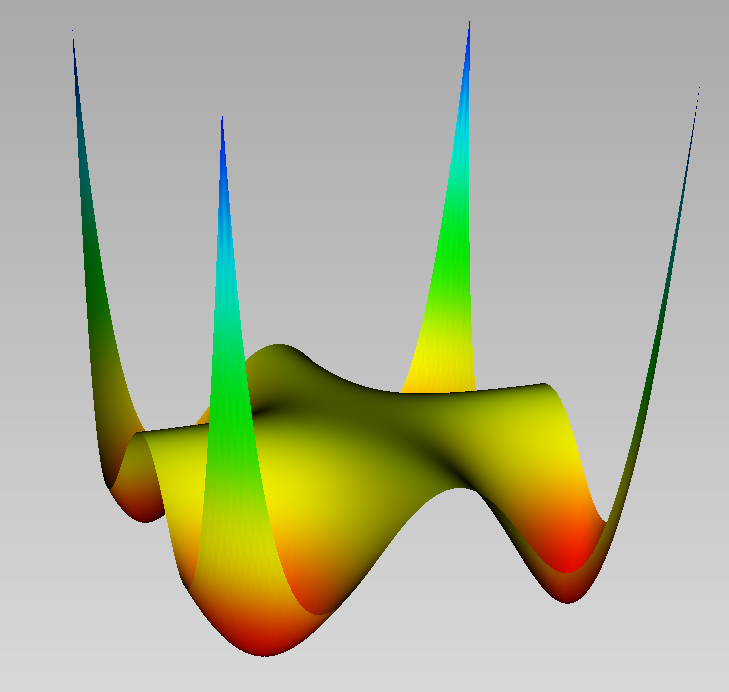

The minimizers of Motzkin polynomial
using DynamicPolynomials, MomentPolynomialOpt
using JuMP, MosekTools; mpo_optimizer(JuMP.optimizer_with_attributes(Mosek.Optimizer, "QUIET" => true));We use Mosek solver for the convex optimization on SDP matrices.
X = @polyvar x y
motz = x^4*y^2 + x^2*y^4 - 3x^2*y^2 + 1 $ 1 - 3x^{2}y^{2} + x^{2}y^{4} + x^{4}y^{2} $
This is Motzkin polynomial, which is non-negative but not a sum of squares.

We construct a moment relaxation of order 6 to minimize the polynomial:
v, M = minimize(motz,[],[],X,6)(-1.1921921828168573, A JuMP Model
Minimization problem with:
Variables: 91
Objective function type: AffExpr
`AffExpr`-in-`MathOptInterface.EqualTo{Float64}`: 1 constraint
`Vector{AffExpr}`-in-`MathOptInterface.PositiveSemidefiniteConeTriangle`: 1 constraint
Model mode: AUTOMATIC
CachingOptimizer state: ATTACHED_OPTIMIZER
Solver name: Dual model with Mosek attached
Names registered in the model: mu, type)v-1.1921921828168573The objective value is a lower bound of the actual mimimal value $0$ of Motzkin polynomial.
We extract a measure from the sequence of moments:
w, Xi = get_measure(M)([0.0026883163983826715, 0.01047896196826447, 0.0027735765469068907, 0.012843909288925688, 0.19616936321231251, 0.03434046740021252, 0.21509640717639428, 0.21509640717622966, 0.03434046739971617, 0.19616936321243933, 0.012843909288991885, 0.0027735765469080512, 0.01047896196826921, 0.0026883163983818232], [-32.48832713409418 -26.784975212459656 … 26.78497521246037 32.48832713409392; -13.350812204541068 -6.394449983606535 … 6.394449983604005 13.350812204542907])w is the vector of weights and Xi is the matrix of points, that is support of the measure $\mu=\sum_i \omega_i \delta_{\Xi_i}$. w[i] is the weight of the Dirac measure corresponding to the point Xi[:,i] in this decomposition.
Here no point is found to approximate the optimal moment sequence.
Now, to find the minimizers, we add as constraints, that the gradient of the polynomial should vanish:
J = differentiate(motz,X)
v, M = minimize(motz, J,[], X, 6)(3.425090500108752e-8, A JuMP Model
Minimization problem with:
Variables: 91
Objective function type: AffExpr
`AffExpr`-in-`MathOptInterface.EqualTo{Float64}`: 73 constraints
`Vector{AffExpr}`-in-`MathOptInterface.PositiveSemidefiniteConeTriangle`: 1 constraint
Model mode: AUTOMATIC
CachingOptimizer state: ATTACHED_OPTIMIZER
Solver name: Dual model with Mosek attached
Names registered in the model: mu, type)w, Xi = get_measure(M)(ComplexF64[0.250000291733613 + 1.3997848659793657e-23im, 0.24999968122266356 - 2.992791069588476e-23im, 0.24999968122266475 + 9.916715552616423e-23im, 0.25000029173361216 - 1.0263318372273331e-23im], ComplexF64[1.000000372268364 - 2.4736625661361147e-23im 0.9999968219304204 - 1.0869941598112134e-21im -0.9999968219304202 + 1.0028089321701322e-21im -1.0000003722683641 + 1.7436285550353185e-23im; -1.000000120346944 - 3.861016728617506e-23im 0.999991461488931 - 1.6966350594808994e-21im -0.9999914614889309 + 1.5652345294854395e-21im 1.000000120346944 + 2.7215429914249185e-23im])The decomposition gives almost real points $\Xi$ for the support:
real.(Xi)2×4 Matrix{Float64}:
1.0 0.999997 -0.999997 -1.0
-1.0 0.999991 -0.999991 1.0We find approximately the $4$ minimizers $(\pm 1, \pm 1)$.
Finally, to find the minimizers, we try another strategy and add the constraint that the polynomial should vanish, since we know that its minimal value (at the minimizers) is $0$:
v, M = minimize(motz, [motz], [], X, 6)(1.028768181754458e-10, A JuMP Model
Minimization problem with:
Variables: 91
Objective function type: AffExpr
`AffExpr`-in-`MathOptInterface.EqualTo{Float64}`: 29 constraints
`Vector{AffExpr}`-in-`MathOptInterface.PositiveSemidefiniteConeTriangle`: 1 constraint
Model mode: AUTOMATIC
CachingOptimizer state: ATTACHED_OPTIMIZER
Solver name: Dual model with Mosek attached
Names registered in the model: mu, type)w, Xi = get_measure(M)([0.25001256622985196, 0.24998736643296088, 0.24998736643296096, 0.25001256622985185], [1.0000146220665007 0.9989130108854624 -0.9989130108854603 -1.0000146220665007; 1.0000098944687037 -0.9983942096911503 0.9983942096911474 -1.0000098944687041])real.(Xi)2×4 Matrix{Float64}:
1.00001 0.998913 -0.998913 -1.00001
1.00001 -0.998394 0.998394 -1.00001The minimizers are also close to that actual minimizers $(\pm 1, \pm 1)$.